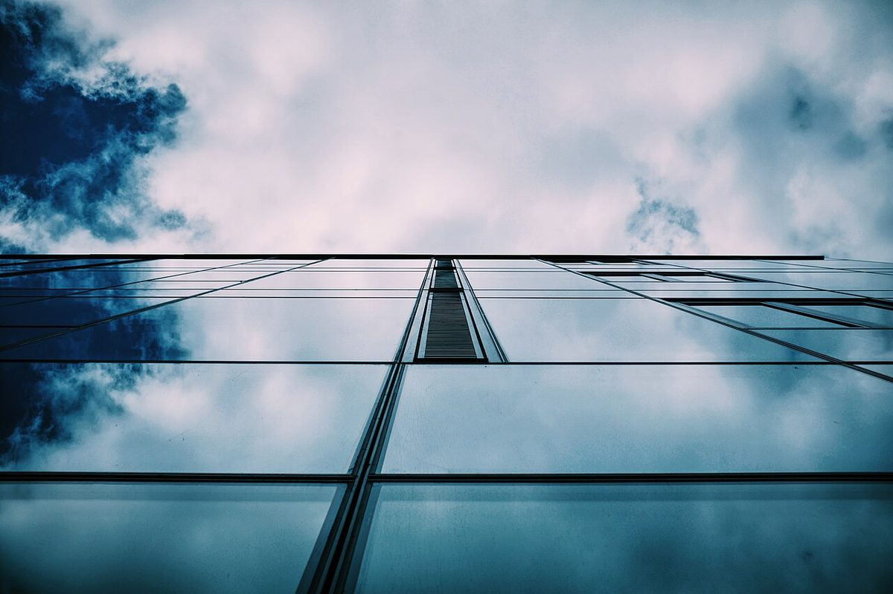

制作側の連想
BとOとBを、上下に折り返す
お店の理念・由来とは無関係で、制作側が屋号の文字から連想したデザインです。「BOB」の三文字は、大文字で書いて上下をひっくり返しても同じ形に読めます。そこでこのサイトは、すべてのページの真ん中に一本の線(折り目)を引き、上の面と下の面を鏡のように写し合わせる作りにしました。コーヒーカップを真上から見ると丸い形になることにも、少し重ねています。
折り返しのギャラリー(イメージ)
線の上と、線の下。
写真は国外・撮影地不明のフリー素材です。お店の写真ではありません。下側は同じ写真を上下反転して薄く写したものです。


